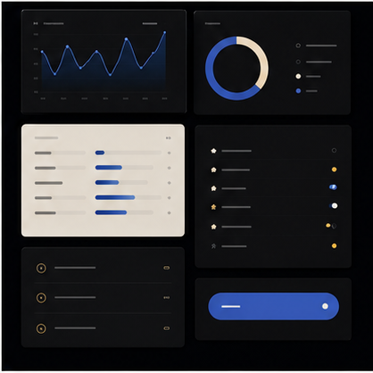
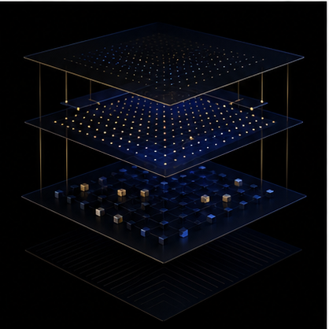
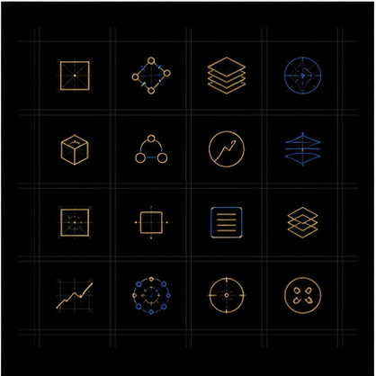
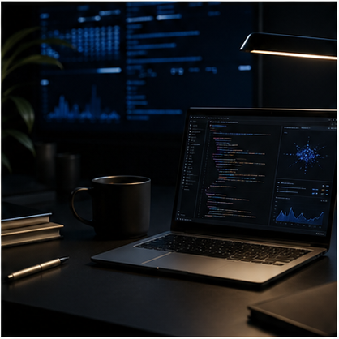
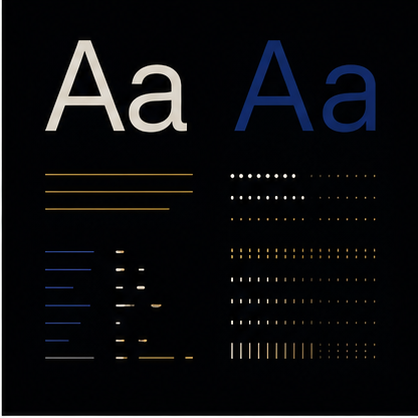
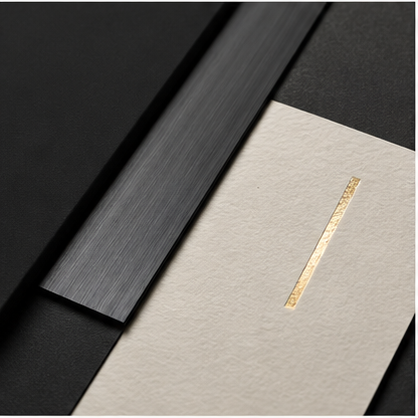
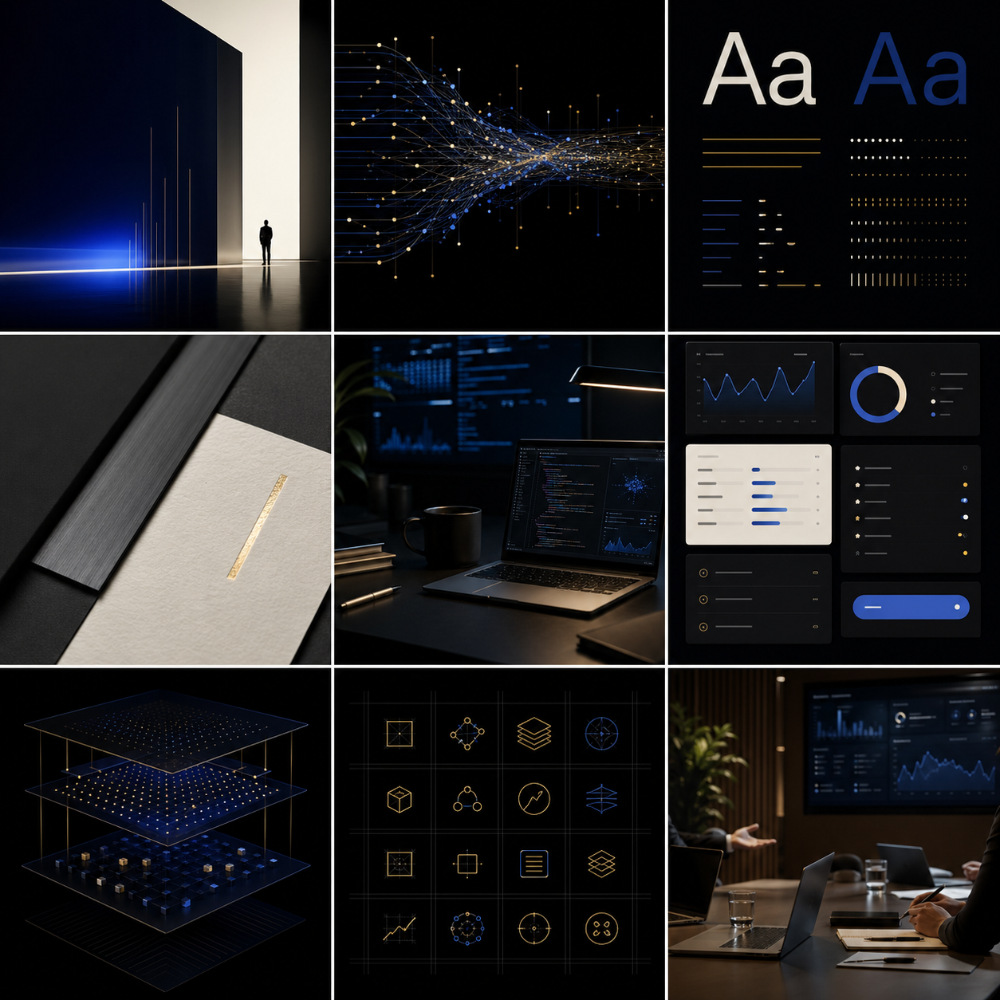

Production AI systems with consulting-grade clarity.
I help teams turn ambiguous AI opportunities into scoped, shipped systems:
agentic workflows, RAG pipelines, product interfaces, and deployment-ready internal tools.
The page should communicate senior technical judgment quickly: what you ship,
where you operate, and why a client can trust you with undefined AI work.
enterprise delivery30,000+
Users served through production AI/product work, with decisions grounded in business workflow reality.

technical focus
Multi-agent orchestration, RAG systems, evaluation loops, data pipelines, and full-stack product delivery.

working style
Translate messy stakeholder asks into narrow, testable, production-shaped builds.
Offer architecture with fewer claims and sharper edges.
A personal brand for collaborators and clients should feel like an operating system,
not a resume pasted onto a landing page.
01 / discovery
AI opportunity mapping
Turn unclear business interest into use cases, constraints, data dependencies, and a build sequence.

02 / build
Production GenAI systems
RAG, agents, dashboards, workflow automation, model integration, and deployment paths that can survive real users.

03 / enablement
Team capability transfer
Documentation, engineering habits, prompt workflows, and review systems so the team can keep moving after handoff.

Extracted brand system.
Navy and black carry authority. Cobalt signals AI and active states.
Ivory creates editorial clarity. Gold is reserved for proof, trust, and precision.
#02050A#071120#2563EB#C69B42#F6F0E4


collaboration signal
Build the thing clients hoped AI could do, then make it maintainable.
The final site direction should make you look like the person who can bridge
strategy, implementation, and operational reality without drifting into hype.